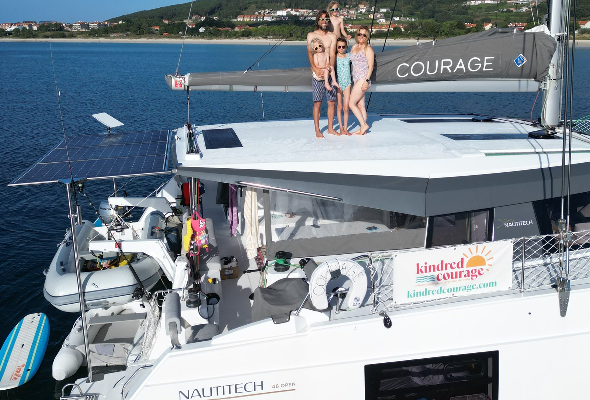
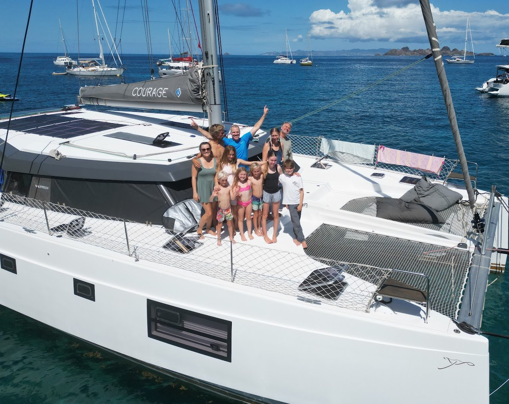

Our Story
Three years living aboard Courage, from both of us — why we bought her, how we've upgraded her, and what we'll miss most.


Peter's Story
We are selling our Nautitech 46 Open, which has been our home for the past three years. It's bittersweet for us but feel like it's the right decision for our family to allow our kids time home with family and community. We've lived abroard for 6 years, 3 in England and past 3 cruising. Our daughter is 14, and just started high school. We began this adventure with a 3 year plan anticipating that we'd return home this summer to allow our daughter a more normal high school experience. She is a passionate and talented musician and being back home is providing her so many opportunities to grow her musical career. She also just got accepted to the Bend School of Rock House Band and signed a one year contract with the group. We love that we can support her pursuits and give our boys an opportunity to pursue their own interests in rock climbing, mountain biking and skiing.
We bought Courage from Key Yachting in the UK and sailed her back from La Rochelle, France in May 2023, after NeoMarine outfitted her for off-grid living. We then spent two months outfitting her in Gosport, UK and moving aboard before leaving in August 2023 for the Mediterranean.
After two full seasons in the Med, she crossed the Atlantic in November 2025 — 17.5 days, 2,800nm from Gran Canaria to Barbados, averaging 6.7 knots while running the engines for under 10 hours total. We then spent the 2026 season exploring the Lesser Antilles, up to Saint Maarten and down to Grenada. Over our three years of ownership we've continued investing in upgrades for liveaboard comfort off-grid, and she's extremely well cared for with detailed maintenance records.
We're offering an extended handover and are open to delivering her anywhere in the Caribbean, or possibly farther. For US buyers: we have not imported her into the US or paid duties on her, so bringing her stateside would best be done under a foreign flag with a cruising permit to avoid import duties.
Elizabeth's Story
There are so many things I love about Courage, but I think what I've appreciated most is how much she has always felt like a home, not just a boat.
She's bright, modern, beautiful, and incredibly comfortable to live aboard. There is so much storage that we've never felt like we were camping or constantly trying to cram our lives into tiny spaces. Our master cabin and bathroom, especially, have always felt like a real bedroom and bathroom. There's plenty of room for clothes, toiletries, and all the everyday things that make a space feel like home.
I also love having a dedicated desk downstairs. When you're living, traveling, homeschooling, and working aboard, having an actual workspace that is separate from the main living area is one of those little luxuries that turns out to be a very big one.
And then there are the windows. Waking up in the morning, opening your eyes, and seeing turquoise Caribbean water, a tiny Mediterranean village, a rugged volcanic island, or absolutely nothing but ocean through those huge cabin windows never really gets old. Some of my favorite memories aboard Courage are simply waking up and realizing where we are.
For all her comfort, though, Courage is also just incredibly fun to sail. She's fast. We regularly sail between 7 and 13 knots, and there is something pretty magical about watching this big, comfortable home pick up her skirts and fly across the water. At the same time, she has always felt remarkably safe and solid to me, which matters enormously when the boat beneath you is carrying your entire family.
I think that combination is what I love most about her. Courage gave us a beautiful, comfortable home for everyday family life, but that home could also sail us thousands of miles across the world.
That's a pretty extraordinary place to call home.
What we love and how we've upgraded Courage to be so comfortable
The boat layout
Courage is a 3-cabin, en-suite layout with a starboard forepeak berth accessible from forward starboard cabin, that makes it ideal for a couple of small children or a single adult. We've hosted families for visits and it works great — the starboard forepeak gives them their own space and everyone sleeps comfortably. The master cabin takes up the entire port hull, with a generous bathroom and separate toilet. We selected factory options to allow both the saloon and cockpit tables to drop into beds, which has been well worth it for passages — it lets us nap or sleep in the cockpit or saloon.
Sailing, motoring & docking
- Courage has very good all-around sailing performance, upwind and downwind — I appreciate that we're often still sailing when the wind drops and fellow cruisers on Lagoons or FPs are flipping on their engines. We did 3,900nm last season, including the Atlantic crossing plus six months cruising the Caribbean, and used 260L of fuel over those seven months, which shows just how much of that we covered under sail.
- She's easy to single-hand or short-hand. The self-tacking jib makes upwind sailing trivial, and off-wind sailing is easily done short-handed. There were numerous sails where my 8- to 9-year-old son or 11- to 12-year-old daughter helped me hoist, furl, and unfurl the gennaker and/or launch and douse the Oxley.
- Having a first reef point at 26kt TWS/AWS avoids the unnecessary reefing and unreefing that Lagoons and FPs often require starting around 15kt — and since we mostly passage-plan for winds under 20kts TWS, we often carry full sail the whole way and never end up reefing at all.
- The gennaker and Oxley are excellent complements for off-wind performance, letting the boat sail well in breezes down to 8kts. On a reach with the gennaker and full main in 8kts, she can do 7+ kts. The gennaker is easily handled solo in light winds (under 14kts).
- Courage is responsive and fun to hand-steer, which also doubles as a good gauge for how hard the autopilot is working — a useful cue for sail trim adjustments.
- The autopilot has been rock-solid; the boat holds course regardless of sea state or sargassum. We know several owners on Lagoons who've had to stop or reverse to clear sargassum from their rudders after it caused the autopilot to fail to hold course, and I've sailed with owners on FPs whose autopilots struggled in heavy sea states.
- The Oxley sails downwind amazingly — as high as 140° TWA with no trim adjustments, letting us steer on course-hold instead of wind-hold — and we've sailed it as high as 100° TWA in lighter breezes (up to 12kts), which makes it very versatile.
- The full suite of B&G Zeus chart plotters (both helm stations plus the inside nav station) has proved reliable and fantastic compared to what we've seen on other boats and heard from fellow cruisers. My wife and I would often sit at opposite helm stations under sail — she'd watch the instruments to help keep her fears in check, while I managed sails and navigation from the other helm. The B&G app also supports remote mirroring to phone or tablet, so I could be napping below or lounging on a bean bag up front while still keeping an eye on the instruments.
- We almost always motor on one engine, between 1,700rpm (5kt cruise, burning 2.5–3L/hr) and 2,100rpm (6kt cruise, burning 3.5–4L/hr). Running a single engine has real benefits — if someone's sleeping in the opposite hull from the running engine, it's almost unnoticeable, so we often switch engines based on who's on watch for overnight passages. It's also quieter overall and keeps total engine hours low.
- Coming into dock, the outboard helm stations and the masthead B&G camera make it easy to maneuver in tight spaces — the camera gives a great forward view, and standing at a helm along the boat's edge makes it easy to judge distance. Docking with one other person aboard, or even solo, is simple, since I can maneuver the boat and toss the rear dock line right from the helm station. In three years of cruising I never felt the need for engine controls on the port side — there were only one or two situations where we had to come alongside to port, otherwise it's been easy to favor starboard.
Tech, automation & monitoring
- We installed SailServer, which tracks every voyage automatically once the boat starts moving and provides an anchor alarm for drift, plus depth and windspeed alerts on or off the boat. SailServer also publishes data to NoForeignLand and has other neat integrations.
- Water and fuel tank sensors integrated into the Victron Cerbo for remote monitoring and alarms; a wireless tank sensor was also added to the starboard blackwater tank.
- Ruuvi wireless sensors placed throughout the boat monitor temperature and humidity — engine compartments, cabins, saloon, and both fridge/freezer — integrated into the Victron Cerbo for remote monitoring and alarms.
- Upgraded anchor light: the Marine Beam light combines a dusk-to-dawn anchor light, masthead tricolor, and SOS strobe in one fixture.
- Shelly wireless relays installed for monitoring and automation — the water heater, saloon LED lighting, underwater lights, and the saloon and starboard-cabin A/C units are all wired into separate relays, letting us turn each one on or off remotely, schedule it, or trigger it based on conditions. For example, hot water requires running the starboard engine or switching on the electric water heater — we have it set up so that once the batteries hit 99% SOC (typically midday), the water heater kicks on before the batteries are full and solar gets wasted, giving us hot water most afternoons and evenings. We also use scheduling to turn on the underwater and saloon lights at sunset. Another automation use for us is the A/C in our boys' cabin, which we'll turn on when they head to sleep and have automatically shut off an hour later. Being able to flip the saloon and underwater lights on remotely is great for late nights returning to the boat in a crowded anchorage — it lights up the water and the saloon, making it easy to find our boat among a dark sea of masthead lights.
On the dock
- After our first winter in Tunisia, we added a shore-water direct-connect into the boat plumbing. It taps into the cold-water supply at the rear starboard swim step with a double check valve, plus a pressure regulator and inline filter to keep high-pressure or dirty water out of the boat's plumbing. The benefits are huge — we can shut off the fresh-water pump entirely, cutting wear and tear and skipping the need to monitor and refill tankage while on the dock. In the Med we used this often; in the Caribbean it's been a nice bonus on the occasions we do pull into a marina, giving us essentially endless water for laundry, showers, cleaning, and more.
- Our first summer in the Med was hot, and the worst days were the ones spent at a marina with no breeze through the boat. We love the A/C we installed — we now happily pull into marinas to explore towns, reprovision, or tackle repairs without worrying about running the units simultaneously. Fortunately, the Caribbean has been far cooler than the Med, so while we've gotten some use out of the A/C on anchor, we haven't needed it nearly as much. The ability to shut the hatches on a hot or nasty night and still cool the sleeping space is a feature we're very grateful for. We even used the heating mode briefly in the Med after installation and wish we'd had it during our first winter there.
- Our inflatable passerelle has been great for getting on and off the boat when Med-moored, and stows away easily in the engine compartments.
- Being nervous about docking a new boat, we bought 6 inflatable Fenderex fenders that first year, which really boosted our confidence and let us deploy up to 14 fenders total when needed to keep the boat safe alongside other boats. Our original plan was to replace the factory fenders entirely, but we've found them to be useful workhorses to keep aboard for extended periods on the dock.
At anchor
- We love spending time at anchor, and one of the big draws of the Nautitech is the open floorplan between the saloon and cockpit. We lived most of the time with both sliding doors wide open, making it feel like one big space.
- We often ended up being the boat that hosted parties — the layout easily fits 3 or 4 other families for meals, drinks, or just hanging out, and it's how we often celebrated holidays, birthdays, and other special events.
- Our Highfield with a 20hp outboard has been a workhorse — light enough for us to easily pull far up the beach, yet fast enough to get up on plane with our entire family aboard, plus one or two others. It's let us anchor in remote spots and still resupply easily — a 2- or 3-mile run for groceries is no issue at all. It also gives our kids countless hours of fun being towed behind it on boogie boards, kneeboards, waterskis, tubes, SUPs, surfboards, and more. We're grateful for how well it's held up — we've kept up with regular servicing and maintenance, and kept it fully covered during the months we've been away from the boat.
- The Weber BBQ we added our first winter is one of our favorites — it lets us grill outdoors, stows easily, and comes along to beach BBQs.
Kitchen & pantry
- We love cooking on induction to avoid gas, and bought a 2-burner induction cooktop that we used for our first 1.5 years aboard. It wasn't until our second winter in Greece that we installed a Bosch split induction (2 burners) and gas (2 burners) stove. We use induction about 90% of the time, but having gas as an option is nice when power is a concern — cloudy days, long passages, or heavy cooking.
- The Nespresso machine has been with us since day one and provides a quick caffeine fix any time of day.
- Our Instant Pot Duo Crisp (combo pressure cooker and air fryer) is our single most beloved and versatile appliance — we use it for the majority of our cooking and baking. The oven works great, but we've defaulted to baking bread, cakes, cookies, muffins, and egg bites in the Instant Pot instead, since it lets us cook electric without heating up the galley. The number of one-pot meals we can set, forget, and serve has been a game-changer for both passages and everyday life at anchor.
- The rice cooker was another great addition a year ago, letting us make rice, grains, and oatmeal while the pressure cooker handles the protein for the meal — curries, chicken, and so on.
- The oven isn't our favorite appliance aboard — it takes time to heat up and adds heat to the saloon — but it's still a solid workhorse for baking bagels, loaves of bread, cakes, and more, especially when we're cooking for a crowd. Bagel Sunday became a tradition this past season, and we'd bake two trays most Sunday mornings.